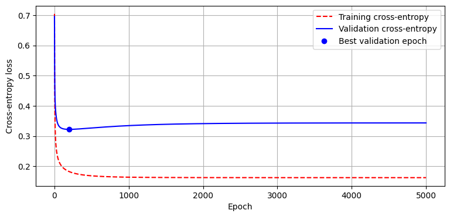
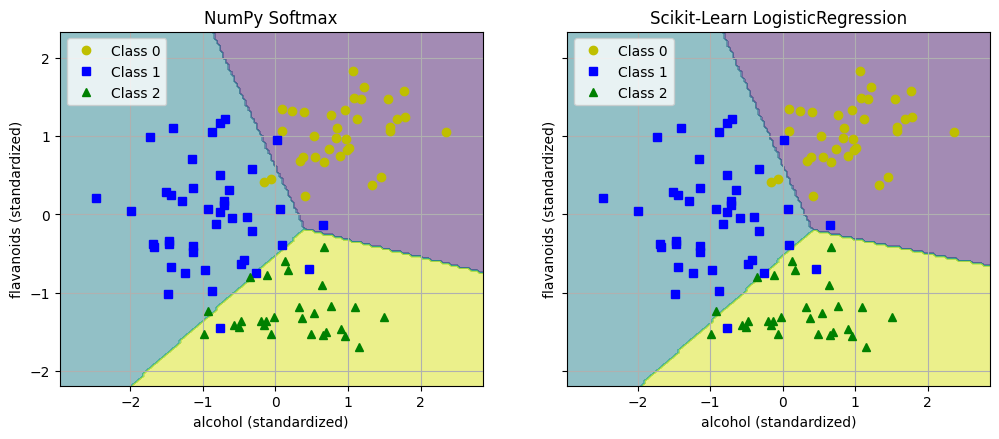
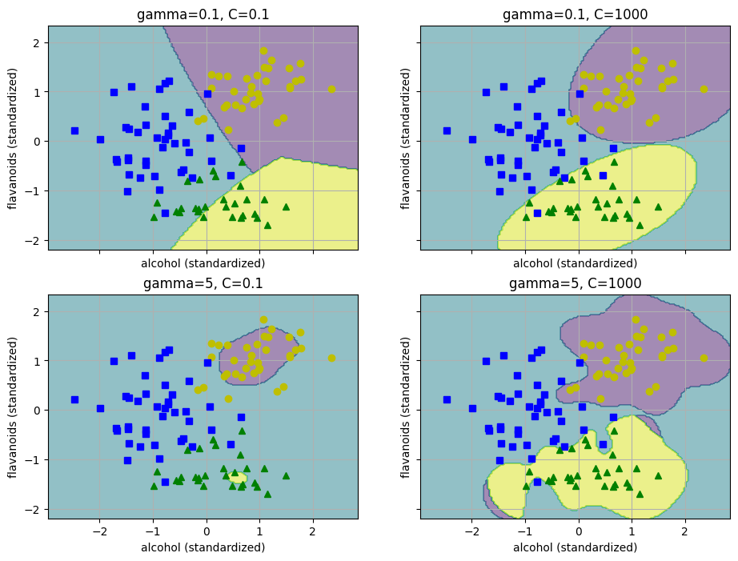
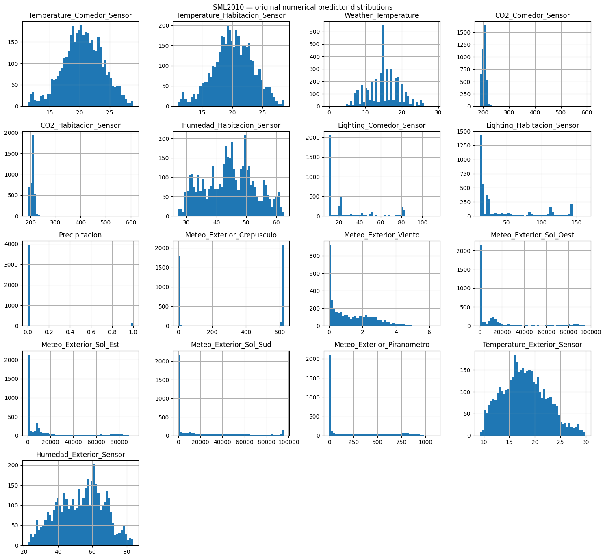
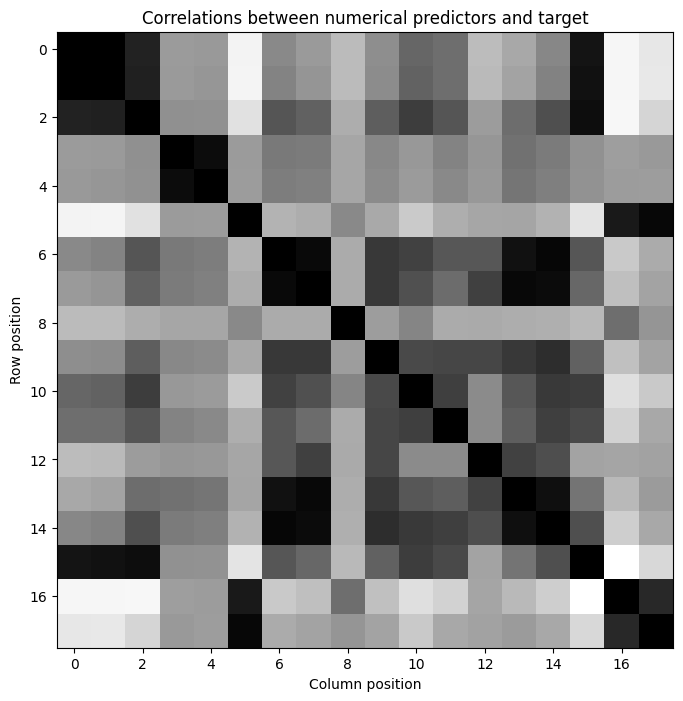
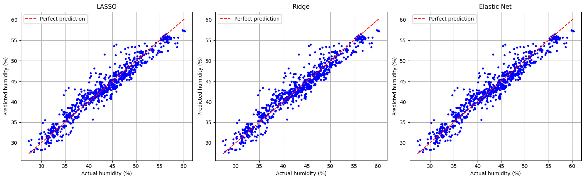

Section 2 — Ασκήσεις αποκλειστικά από τις πραγματικές πηγές
Οι παρακάτω 23 ασκήσεις είναι πιστές ελληνικές αποδόσεις των εκφωνήσεων του Géron και των λύσεων στα συγκεκριμένα ανεβασμένα notebooks. Δεν δημιουργήθηκε νέα εξέταση, νέα άσκηση ή υποθετική εκφώνηση. NOT EXECUTED: δεν επανεκτελέστηκαν notebooks. Κάθε αριθμός αναφέρεται μόνο εφόσον καταγράφεται ως προϋπάρχον αποτέλεσμα.
Ασκήσεις Chapter 4 — Αυθεντική αρίθμηση βιβλίου
Πώς διαβάζονται: Αρχικά εντοπίζουμε ποιο πρόβλημα περιγράφεται στην εκφώνηση. Στη συνέχεια ελέγχουμε αποκλειστικά την ήδη δοσμένη απάντηση του notebook και τη σχέση της με τις αντίστοιχες σελίδες του βιβλίου. Αν ζητείται κώδικας, χρησιμοποιούμε μόνο τον πραγματικό κώδικα που ακολουθεί παρακάτω. Δεν δημιουργείται εναλλακτική λύση ή νέα άσκηση.
Chapter 4 — Άσκηση 1
Εκφώνηση (πιστή απόδοση): Ποιος αλγόριθμος εκπαίδευσης γραμμικής παλινδρόμησης είναι κατάλληλος όταν υπάρχουν εκατομμύρια χαρακτηριστικά;
Λύση από το δοσμένο notebook, με απλά ελληνικά: Η λύση του N4 προτείνει Stochastic ή Mini-batch Gradient Descent, και Batch Gradient Descent όταν το σύνολο χωρά στη μνήμη. Δεν προτείνει Normal Equation/SVD λόγω μεγάλης εξάρτησης του κόστους από τον αριθμό χαρακτηριστικών.
Πηγή λύσης: 04_training_linear_models(1).ipynb — Exercise solutions — κελί 95. ### Chapter 4 — Άσκηση 2
Εκφώνηση (πιστή απόδοση): Τι συμβαίνει αν τα χαρακτηριστικά έχουν πολύ διαφορετικές κλίμακες; Ποιοι αλγόριθμοι επηρεάζονται και τι μπορεί να γίνει;
Λύση από το δοσμένο notebook, με απλά ελληνικά: Η Gradient Descent αργεί λόγω επιμήκους γεωμετρίας της συνάρτησης σφάλματος· προτείνεται scaling. Η Normal Equation/SVD δεν απαιτεί τη συγκεκριμένη κλιμάκωση με τον ίδιο τρόπο. Η πηγή υπενθυμίζει ότι η regularization επίσης επηρεάζεται από άνισες κλίμακες.
Πηγή λύσης: 04_training_linear_models(1).ipynb — Exercise solutions — κελί 95. ### Chapter 4 — Άσκηση 3
Εκφώνηση (πιστή απόδοση): Μπορεί η Gradient Descent να παγιδευτεί σε τοπικό ελάχιστο στη Logistic Regression;
Λύση από το δοσμένο notebook, με απλά ελληνικά: Όχι για τη συνήθη convex συνάρτηση κόστους της Logistic Regression που παρουσιάζει το βιβλίο, επειδή δεν υπάρχουν ανεξάρτητα κατώτερα τοπικά ελάχιστα.
Πηγή λύσης: 04_training_linear_models(1).ipynb — Exercise solutions — κελί 95. ### Chapter 4 — Άσκηση 4
Εκφώνηση (πιστή απόδοση): Δίνουν όλοι οι αλγόριθμοι Gradient Descent το ίδιο μοντέλο αν τρέχουν αρκετά;
Λύση από το δοσμένο notebook, με απλά ελληνικά: Για convex προβλήματα και κατάλληλο learning rate προσεγγίζουν το βέλτιστο, αλλά SGD και Mini-batch συνεχίζουν να ταλαντώνονται γύρω του αν δεν μειώνεται σταδιακά το learning rate.
Πηγή λύσης: 04_training_linear_models(1).ipynb — Exercise solutions — κελί 95. ### Chapter 4 — Άσκηση 5
Εκφώνηση (πιστή απόδοση): Το validation error ανεβαίνει σταθερά κατά τη Batch Gradient Descent: τι συμβαίνει και πώς διορθώνεται;
Λύση από το δοσμένο notebook, με απλά ελληνικά: Αν ανεβαίνει και το training error, η λύση του notebook υποδεικνύει υπερβολικό learning rate και πιθανή απόκλιση. Αν το training error δεν ανεβαίνει, πιθανή αιτία είναι overfitting και χρειάζεται διακοπή.
Πηγή λύσης: 04_training_linear_models(1).ipynb — Exercise solutions — κελί 95. ### Chapter 4 — Άσκηση 6
Εκφώνηση (πιστή απόδοση): Είναι σωστό να σταματά αμέσως η Mini-batch Gradient Descent όταν αυξηθεί το validation error;
Λύση από το δοσμένο notebook, με απλά ελληνικά: Όχι. Οι διακυμάνσεις είναι αναμενόμενες. Το notebook προτείνει να αποθηκεύουμε καλές καταστάσεις και να περιμένουμε αρκετό διάστημα χωρίς βελτίωση πριν επιστρέψουμε στην καλύτερη.
Πηγή λύσης: 04_training_linear_models(1).ipynb — Exercise solutions — κελί 95. ### Chapter 4 — Άσκηση 7
Εκφώνηση (πιστή απόδοση): Ποια Gradient Descent φτάνει γρηγορότερα κοντά στη λύση και ποια συγκλίνει πραγματικά;
Λύση από το δοσμένο notebook, με απλά ελληνικά: Η SGD έχει το γρηγορότερο επιμέρους βήμα και συνήθως πλησιάζει γρήγορα την περιοχή της λύσης· η Batch Gradient Descent μπορεί να συγκλίνει με επαρκή χρόνο, ενώ για SGD/Mini-batch απαιτείται learning schedule ώστε να μειωθούν οι ταλαντώσεις.
Πηγή λύσης: 04_training_linear_models(1).ipynb — Exercise solutions — κελί 95. ### Chapter 4 — Άσκηση 8
Εκφώνηση (πιστή απόδοση): Ένα πολυωνυμικό μοντέλο έχει μεγάλη απόσταση μεταξύ training και validation learning curves. Τι συμβαίνει και πώς αντιμετωπίζεται;
Λύση από το δοσμένο notebook, με απλά ελληνικά: Η λύση αναγνωρίζει overfitting και προτείνει μικρότερο βαθμό πολυωνύμου, regularization Ridge/LASSO ή περισσότερα training samples.
Πηγή λύσης: 04_training_linear_models(1).ipynb — Exercise solutions — κελί 95. ### Chapter 4 — Άσκηση 9
Εκφώνηση (πιστή απόδοση): Στη Ridge τα training και validation errors είναι σχεδόν ίσα αλλά υψηλά. Υψηλό bias ή variance; Τι γίνεται με alpha;
Λύση από το δοσμένο notebook, με απλά ελληνικά: Το notebook αποδίδει το φαινόμενο σε underfitting, δηλαδή υψηλό bias, και προτείνει μείωση της υπερπαραμέτρου regularization alpha.
Πηγή λύσης: 04_training_linear_models(1).ipynb — Exercise solutions — κελί 95. ### Chapter 4 — Άσκηση 10
Εκφώνηση (πιστή απόδοση): Γιατί να επιλέξει κανείς Ridge αντί για χωρίς regularization, LASSO αντί Ridge και Elastic Net αντί LASSO;
Λύση από το δοσμένο notebook, με απλά ελληνικά: Ridge προσθέτει regularization· LASSO μπορεί να μηδενίσει συντελεστές και να επιλέξει χαρακτηριστικά· Elastic Net συχνά συμπεριφέρεται πιο σταθερά από LASSO όταν υπάρχουν ισχυρά συσχετισμένα χαρακτηριστικά. Αυτές είναι οι απαντήσεις του N4 και όχι ανεξάρτητες νέες συμβουλές.
Πηγή λύσης: 04_training_linear_models(1).ipynb — Exercise solutions — κελί 95. ### Chapter 4 — Άσκηση 11
Εκφώνηση (πιστή απόδοση): Για ετικέτες outdoor/indoor και day/night χρειάζονται δύο Logistic Regression ή ένα Softmax;
Λύση από το δοσμένο notebook, με απλά ελληνικά: Η λύση του notebook επιλέγει δύο ταξινομητές Logistic Regression: οι δύο ιδιότητες δεν είναι αμοιβαία αποκλειόμενες και μπορούν να συνυπάρχουν ανεξάρτητα.
Πηγή λύσης: 04_training_linear_models(1).ipynb — Exercise solutions — κελί 95. ### Chapter 4 — Άσκηση 12
Εκφώνηση (πιστή απόδοση): Υλοποίησε Batch Gradient Descent με Early Stopping για Softmax Regression, χρησιμοποιώντας μόνο NumPy, στο Iris.
Λύση από το δοσμένο notebook, με απλά ελληνικά: Το N4 υλοποιεί ρητά: Iris δεδομένα, προσθήκη σταθερής στήλης, χειροκίνητο train/valid/test split, one-hot στόχους, standardization με στατιστικά μόνο του train, Softmax, Batch Gradient Descent, αξιολόγηση, L2 και Early Stopping. Οι πλήρεις πραγματικές εντολές παρατίθενται στη συνέχεια.
Πορεία της πραγματικής λύσης και ερμηνεία των καταγεγραμμένων αποτελεσμάτων: Στα κελιά 98 και 100 επιλέγονται από το Iris το μήκος και το πλάτος πετάλου, μαζί με τις πραγματικές ετικέτες, και προστίθεται στήλη μονάδων για τον σταθερό όρο. Στο κελί 102 κατασκευάζονται τα τρία σύνολα με τις αναλογίες 20% test, 20% validation και το υπόλοιπο training, αφού πρώτα καθοριστεί το seed και ανακατευτεί η σειρά. Στα κελιά 104–109 γίνεται one-hot κωδικοποίηση των ετικετών, ενώ στο 111 ο μέσος όρος και η διασπορά υπολογίζονται από τα training χαρακτηριστικά και εφαρμόζονται με τους ίδιους συντελεστές στα validation/test, αποφεύγοντας την ανάμειξη στατιστικών των συνόλων. Στα 113–117 υπολογίζονται Softmax και gradient της Cross-Entropy και επαναλαμβάνεται η ενημέρωση του πίνακα βαρών. Το κελί 123 προσθέτει την ποινή L2. Το 128 διακόπτει όταν η επικύρωση παύει να βελτιώνεται. Οι έλεγχοι στα 121 και 129 δίνουν 0.9333333333333333 accuracy επικύρωσης, ενώ το τελικό κελί 134 καταγράφει 0.9666666666666667 accuracy test. Πρόκειται για αποθηκευμένα outputs, όχι νέα εκτέλεση. Δεν αλλάζει η σειρά, η μέθοδος ή ο κώδικας της λύσης. Πηγή: 04_training_linear_models(1).ipynb — κελιά 98–134 (αρίθμηση από 0), με τα πραγματικά outputs των κελιών 121, 129, 134.
Πηγή λύσης: 04_training_linear_models(1).ipynb — Exercise solutions — κελιά 96–135. ## Ασκήσεις Chapter 5 — Αυθεντική αρίθμηση βιβλίου
Πώς διαβάζονται: Οι ερωτήσεις προχωρούν από τη βασική ιδέα του margin στην επιλογή υλοποίησης και στις πραγματικές ασκήσεις Python του Iris, Wine και California Housing. Διαβάζουμε πρώτα τις πραγματικές απαντήσεις του notebook, χωρίς να εισάγουμε νέους αλγορίθμους ή παραδείγματα.
Chapter 5 — Άσκηση 1
Εκφώνηση (πιστή απόδοση): Ποια είναι η βασική ιδέα των Support Vector Machines;
Λύση από το δοσμένο notebook, με απλά ελληνικά: Η λύση επιδιώκει τον πλατύτερο δυνατό δρόμο ανάμεσα στις κατηγορίες, συνδυάζοντας margin και διαχείριση παραβιάσεων. Kernels επιτρέπουν μη γραμμική ταξινόμηση, ενώ η οικογένεια περιλαμβάνει και SVR.
Πηγή λύσης: 05_support_vector_machines(1).ipynb — Exercise solutions — κελί 55. ### Chapter 5 — Άσκηση 2
Εκφώνηση (πιστή απόδοση): Τι είναι support vector;
Λύση από το δοσμένο notebook, με απλά ελληνικά: Είναι δείγμα πάνω ή μέσα στον δρόμο που επηρεάζει το όριο απόφασης. Η λύση του notebook εξηγεί ότι δείγματα εκτός margin δεν επηρεάζουν την τοποθέτησή του όσο παραμένουν εκτός.
Πηγή λύσης: 05_support_vector_machines(1).ipynb — Exercise solutions — κελί 55. ### Chapter 5 — Άσκηση 3
Εκφώνηση (πιστή απόδοση): Γιατί χρειάζεται scaling των εισόδων στα SVM;
Λύση από το δοσμένο notebook, με απλά ελληνικά: Η λύση συνδέει την ανάγκη scaling με τον υπολογισμό ενός μεγάλου margin σε διαφορετικές διαστάσεις, όπως δείχνει το σχήμα 5-2.
Πηγή λύσης: 05_support_vector_machines(1).ipynb — Exercise solutions — κελί 55. ### Chapter 5 — Άσκηση 4
Εκφώνηση (πιστή απόδοση): Μπορεί ένας SVM ταξινομητής να δώσει confidence score ή πιθανότητα;
Λύση από το δοσμένο notebook, με απλά ελληνικά: Η decision_function() δίνει score απόφασης. Οι scores δεν είναι απευθείας πιθανότητες. Με SVC(probability=True) γίνεται πρόσθετη εκπαίδευση βαθμονόμησης πιθανοτήτων, όπως περιγράφει το notebook.
Πηγή λύσης: 05_support_vector_machines(1).ipynb — Exercise solutions — κελί 55. ### Chapter 5 — Άσκηση 5
Εκφώνηση (πιστή απόδοση): Πώς επιλέγουμε μεταξύ LinearSVC, SVC και SGDClassifier;
Λύση από το δοσμένο notebook, με απλά ελληνικά: Το SVC υποστηρίζει kernels αλλά κλιμακώνεται δυσκολότερα με πολλά samples. Το LinearSVC είναι βελτιστοποιημένο για γραμμικό διαχωρισμό. Το SGDClassifier υποστηρίζει incremental learning. Η λύση συγκρίνει επίσης μνήμη και κόστος.
Πηγή λύσης: 05_support_vector_machines(1).ipynb — Exercise solutions — κελί 55. ### Chapter 5 — Άσκηση 6
Εκφώνηση (πιστή απόδοση): Ένα RBF SVM υποπροσαρμόζεται: πρέπει να αυξήσουμε ή να μειώσουμε gamma και C;
Λύση από το δοσμένο notebook, με απλά ελληνικά: Στη συγκεκριμένη απάντηση του notebook προτείνεται αύξηση του gamma ή του C, ή και των δύο, για λιγότερη regularization.
Πηγή λύσης: 05_support_vector_machines(1).ipynb — Exercise solutions — κελί 55. ### Chapter 5 — Άσκηση 7
Εκφώνηση (πιστή απόδοση): Τι σημαίνει epsilon-insensitive στην SVR;
Λύση από το δοσμένο notebook, με απλά ελληνικά: Η λύση εξηγεί ότι προσθήκη δειγμάτων μέσα στη ζώνη epsilon γύρω από τις προβλέψεις δεν αλλάζει την ποινή της σχετικής loss.
Πηγή λύσης: 05_support_vector_machines(1).ipynb — Exercise solutions — κελί 55. ### Chapter 5 — Άσκηση 8
Εκφώνηση (πιστή απόδοση): Ποιος είναι ο σκοπός του kernel trick;
Λύση από το δοσμένο notebook, με απλά ελληνικά: Επιτρέπει αποτέλεσμα αντίστοιχο με μη γραμμικό μετασχηματισμό χαρακτηριστικών σε μεγαλύτερο χώρο, χωρίς να χρειάζεται να πραγματοποιηθεί ρητά ο μετασχηματισμός.
Πηγή λύσης: 05_support_vector_machines(1).ipynb — Exercise solutions — κελί 55. ### Chapter 5 — Άσκηση 9
Εκφώνηση (πιστή απόδοση): Εκπαίδευσε LinearSVC, SVC και SGDClassifier στο ίδιο γραμμικά διαχωρίσιμο dataset και σύγκρινε τα μοντέλα.
Λύση από το δοσμένο notebook, με απλά ελληνικά: Το N5 χρησιμοποιεί Iris setosa και versicolor, StandardScaler, LinearSVC, SVC με γραμμικό kernel και SGDClassifier με hinge loss, και συγκρίνει τις γραμμές αποφάσεων.
Πορεία της πραγματικής λύσης: Το κελί 59 φορτώνει τα Iris, χρησιμοποιεί μήκος και πλάτος πετάλου και κρατά μόνο setosa/versicolor, όπως ζητά το παράδειγμα. Το κελί 61 εισάγει και εκπαιδεύει τους τρεις ταξινομητές της άσκησης, με τις παραμέτρους που επέλεξε η πηγή. Τα χαρακτηριστικά κλιμακώνονται πριν από τη σύγκριση, ώστε οι τρεις μέθοδοι να αξιολογούνται στις ίδιες εισόδους. Το κελί 63 περιέχει τη βοηθητική συνάρτηση της πηγής που εξάγει και σχεδιάζει τα όρια απόφασης. Η σύγκριση αφορά τα πραγματικά σχεδιασμένα όρια, όχι έναν επινοημένο πίνακα accuracy. Πηγή: 05_support_vector_machines(1).ipynb — κελιά 59, 61, 63.
Πηγή λύσης: 05_support_vector_machines(1).ipynb — Exercise solutions — κελιά 56–64. ### Chapter 5 — Άσκηση 10
Εκφώνηση (πιστή απόδοση): Εκπαίδευσε SVM ταξινομητή στο Wine dataset για τρεις κατηγορίες και αξιολόγησε accuracy.
Λύση από το δοσμένο notebook, με απλά ελληνικά: Το N5 φορτώνει 178 δείγματα κρασιού, κάνει train/test split, δοκιμάζει LinearSVC, scaling, SVC και RandomizedSearchCV. Το notebook αναφέρει περίπου 97.7% για cross-validation του scaled LinearSVC και υψηλότερο αποτέλεσμα με fine-tuned SVC, ενώ δίνει και test score.
Πορεία της πραγματικής λύσης και πραγματικές επιδόσεις: Στα κελιά 68–71 φορτώνεται το Wine και γίνεται train/test split. Η πηγή έχει 178 δείγματα και τρεις κατηγορίες. Αρχικά δοκιμάζεται LinearSVC και στη συνέχεια εφαρμόζεται StandardScaler μέσα στο pipeline, επειδή το SVM επηρεάζεται από τις κλίμακες. Το κελί 82 καταγράφει μέσο cross-validation accuracy 0.9774928774928775. Στη συνέχεια δοκιμάζεται SVC και η υπάρχουσα RandomizedSearchCV επιλέγει υπερπαραμέτρους. Το κελί 88 καταγράφει 0.9925925925925926 ως καλύτερο cross-validation score της αναζήτησης. Το κελί 90 δίνει τελικό test score 0.9777777777777777. Πρόκειται για διαφορετικές αξιολογήσεις και δεν πρέπει να συγχέονται. Οι αριθμοί αντιγράφονται από τις αποθηκευμένες εξόδους του notebook· NOT EXECUTED εδώ. Πηγή: 05_support_vector_machines(1).ipynb — κελιά 68–90, ιδιαίτερα 82, 88, 90.
Πηγή λύσης: 05_support_vector_machines(1).ipynb — Exercise solutions — κελιά 65–91. ### Chapter 5 — Άσκηση 11
Εκφώνηση (πιστή απόδοση): Εκπαίδευσε και ρύθμισε SVR στο California Housing και αξιολόγησε RMSE.
Λύση από το δοσμένο notebook, με απλά ελληνικά: Το N5 φορτώνει το dataset, κάνει train/test, κλιμακώνει, δοκιμάζει LinearSVR και RBF-SVR, αναζητεί C και gamma με randomized search σε μικρότερο training subset και μετρά RMSE στο test.
Πορεία της πραγματικής λύσης και πραγματική έξοδος: Το κελί 95 φορτώνει το California Housing, ενώ το 97 κάνει train/test split. Το 100 ορίζει γραμμικό SVR με scaling. Το 106 μετρά στο training σύνολο αποθηκευμένο RMSE 0.9595484665813285. Τα επόμενα κελιά δοκιμάζουν SVR με RBF kernel και αναζήτηση τιμών C και gamma, όπως περιέχει ήδη το notebook. Το 110 εμφανίζει τιμές cross-validation RMSE και το 112 καταγράφει το τελικό test RMSE 0.5854732265172222 για το επιλεγμένο μοντέλο. Οι αριθμοί δεν είναι νέοι υπολογισμοί. Το training RMSE του γραμμικού μοντέλου και το test RMSE του επιλεγμένου RBF μοντέλου δεν είναι άμεση σύγκριση πάνω στο ίδιο σύνολο. Πηγή: 05_support_vector_machines(1).ipynb — κελιά 95–112, ιδιαίτερα 106, 110, 112.
Πηγή λύσης: 05_support_vector_machines(1).ipynb — Exercise solutions — κελιά 92–114. ## Πλήρεις προγραμματιστικές λύσεις όπως υπάρχουν στα notebooks
Οι παρακάτω κώδικες είναι αυτούσια κελιά των επίσημα παρεχόμενων notebooks και πρέπει να διαβάζονται με τη σειρά των κελιών. Δεν προτείνονται ως νέο, αυτοτελές πρόγραμμα. Οι helper functions, μεταβλητές και τα δεδομένα τους ορίζονται μέσα στα προηγούμενα κελιά. Δεν εισάγεται βιβλιοθήκη εκτός των ήδη δοσμένων παραδειγμάτων.
Chapter 4 — Άσκηση 12: πραγματικός κώδικας της δοσμένης λύσης
Πριν από τον κώδικα — αλγόριθμος όπως περιγράφει η πηγή: Αρχικά επιλέγονται χαρακτηριστικά Iris και προστίθεται bias. Γίνεται ο χειροκίνητος διαχωρισμός, έπειτα one-hot κωδικοποίηση και standardization χρησιμοποιώντας μόνο τις training στατιστικές. Καθορίζεται η Softmax, υπολογίζεται η gradient της cross-entropy, ενημερώνεται ο πίνακας βαρών, εφαρμόζεται L2 και Early Stopping, και η τελική απόδοση ελέγχεται στα test δεδομένα.
X = iris.data[["petal length (cm)", "petal width (cm)"]].values
y = iris["target"].valuesX_with_bias = np.c_[np.ones(len(X)), X]test_ratio = 0.2
validation_ratio = 0.2
total_size = len(X_with_bias)
test_size = int(total_size * test_ratio)
validation_size = int(total_size * validation_ratio)
train_size = total_size - test_size - validation_size
np.random.seed(42)
rnd_indices = np.random.permutation(total_size)
X_train = X_with_bias[rnd_indices[:train_size]]
y_train = y[rnd_indices[:train_size]]
X_valid = X_with_bias[rnd_indices[train_size:-test_size]]
y_valid = y[rnd_indices[train_size:-test_size]]
X_test = X_with_bias[rnd_indices[-test_size:]]
y_test = y[rnd_indices[-test_size:]]def to_one_hot(y):
return np.diag(np.ones(y.max() + 1))[y]Y_train_one_hot = to_one_hot(y_train)
Y_valid_one_hot = to_one_hot(y_valid)
Y_test_one_hot = to_one_hot(y_test)mean = X_train[:, 1:].mean(axis=0)
std = X_train[:, 1:].std(axis=0)
X_train[:, 1:] = (X_train[:, 1:] - mean) / std
X_valid[:, 1:] = (X_valid[:, 1:] - mean) / std
X_test[:, 1:] = (X_test[:, 1:] - mean) / stddef softmax(logits):
exps = np.exp(logits)
exp_sums = exps.sum(axis=1, keepdims=True)
return exps / exp_sumsn_inputs = X_train.shape[1] # == 3 (2 features plus the bias term)
n_outputs = len(np.unique(y_train)) # == 3 (there are 3 iris classes)eta = 0.5
n_epochs = 5001
m = len(X_train)
epsilon = 1e-5
np.random.seed(42)
Theta = np.random.randn(n_inputs, n_outputs)
for epoch in range(n_epochs):
logits = X_train @ Theta
Y_proba = softmax(logits)
if epoch % 1000 == 0:
Y_proba_valid = softmax(X_valid @ Theta)
xentropy_losses = -(Y_valid_one_hot * np.log(Y_proba_valid + epsilon))
print(epoch, xentropy_losses.sum(axis=1).mean())
error = Y_proba - Y_train_one_hot
gradients = 1 / m * X_train.T @ error
Theta = Theta - eta * gradientsΉδη αποθηκευμένο αποτέλεσμα του αρχικού notebook (όχι νέα εκτέλεση):
0 3.7085808486476917
1000 0.14519367480830644
2000 0.1301309575504088
3000 0.12009639326384539
4000 0.11372961364786884
5000 0.11002459532472425logits = X_valid @ Theta
Y_proba = softmax(logits)
y_predict = Y_proba.argmax(axis=1)
accuracy_score = (y_predict == y_valid).mean()
accuracy_scoreΉδη αποθηκευμένο αποτέλεσμα του αρχικού notebook (όχι νέα εκτέλεση):
0.9333333333333333eta = 0.5
n_epochs = 5001
m = len(X_train)
epsilon = 1e-5
alpha = 0.01 # regularization hyperparameter
np.random.seed(42)
Theta = np.random.randn(n_inputs, n_outputs)
for epoch in range(n_epochs):
logits = X_train @ Theta
Y_proba = softmax(logits)
if epoch % 1000 == 0:
Y_proba_valid = softmax(X_valid @ Theta)
xentropy_losses = -(Y_valid_one_hot * np.log(Y_proba_valid + epsilon))
l2_loss = 1 / 2 * (Theta[1:] ** 2).sum()
total_loss = xentropy_losses.sum(axis=1).mean() + alpha * l2_loss
print(epoch, total_loss.round(4))
error = Y_proba - Y_train_one_hot
gradients = 1 / m * X_train.T @ error
gradients += np.r_[np.zeros([1, n_outputs]), alpha * Theta[1:]]
Theta = Theta - eta * gradientsΉδη αποθηκευμένο αποτέλεσμα του αρχικού notebook (όχι νέα εκτέλεση):
0 3.7372
1000 0.3259
2000 0.3259
3000 0.3259
4000 0.3259
5000 0.3259logits = X_valid @ Theta
Y_proba = softmax(logits)
y_predict = Y_proba.argmax(axis=1)
accuracy_score = (y_predict == y_valid).mean()
accuracy_scoreΉδη αποθηκευμένο αποτέλεσμα του αρχικού notebook (όχι νέα εκτέλεση):
0.9333333333333333eta = 0.5
n_epochs = 50_001
m = len(X_train)
epsilon = 1e-5
C = 100 # regularization hyperparameter
best_loss = np.inf
np.random.seed(42)
Theta = np.random.randn(n_inputs, n_outputs)
for epoch in range(n_epochs):
logits = X_train @ Theta
Y_proba = softmax(logits)
Y_proba_valid = softmax(X_valid @ Theta)
xentropy_losses = -(Y_valid_one_hot * np.log(Y_proba_valid + epsilon))
l2_loss = 1 / 2 * (Theta[1:] ** 2).sum()
total_loss = xentropy_losses.sum(axis=1).mean() + 1 / C * l2_loss
if epoch % 1000 == 0:
print(epoch, total_loss.round(4))
if total_loss < best_loss:
best_loss = total_loss
else:
print(epoch - 1, best_loss.round(4))
print(epoch, total_loss.round(4), "early stopping!")
break
error = Y_proba - Y_train_one_hot
gradients = 1 / m * X_train.T @ error
gradients += np.r_[np.zeros([1, n_outputs]), 1 / C * Theta[1:]]
Theta = Theta - eta * gradientsΉδη αποθηκευμένο αποτέλεσμα του αρχικού notebook (όχι νέα εκτέλεση):
0 3.7372
281 0.3256
282 0.3256 early stopping!logits = X_valid @ Theta
Y_proba = softmax(logits)
y_predict = Y_proba.argmax(axis=1)
accuracy_score = (y_predict == y_valid).mean()
accuracy_scoreΉδη αποθηκευμένο αποτέλεσμα του αρχικού notebook (όχι νέα εκτέλεση):
0.9333333333333333logits = X_test @ Theta
Y_proba = softmax(logits)
y_predict = Y_proba.argmax(axis=1)
accuracy_score = (y_predict == y_test).mean()
accuracy_scoreΉδη αποθηκευμένο αποτέλεσμα του αρχικού notebook (όχι νέα εκτέλεση):
0.9666666666666667Επεξήγηση των βημάτων: Αρχικά επιλέγονται χαρακτηριστικά Iris και προστίθεται bias. Γίνεται ο χειροκίνητος διαχωρισμός, έπειτα one-hot κωδικοποίηση και standardization χρησιμοποιώντας μόνο τις training στατιστικές. Καθορίζεται η Softmax, υπολογίζεται η gradient της cross-entropy, ενημερώνεται ο πίνακας βαρών, εφαρμόζεται L2 και Early Stopping, και η τελική απόδοση ελέγχεται στα test δεδομένα. Η συγκεκριμένη σειρά κώδικα δεν τροποποιήθηκε. Νέα εκτέλεση: NOT EXECUTED.
Chapter 5 — Άσκηση 9: πραγματικός κώδικας της δοσμένης λύσης
Πριν από τον κώδικα — αλγόριθμος όπως περιγράφει η πηγή: Από το Iris κρατιούνται οι δύο γραμμικά διαχωρίσιμες κλάσεις, γίνεται scaling, εκπαιδεύονται ακριβώς LinearSVC, SVC και SGDClassifier της πηγής και σχεδιάζονται τα όριά τους. Το τελευταίο κελί είναι κώδικας δημιουργίας του διαγράμματος.
from sklearn import datasets
iris = datasets.load_iris(as_frame=True)
X = iris.data[["petal length (cm)", "petal width (cm)"]].values
y = iris.target
setosa_or_versicolor = (y == 0) | (y == 1)
X = X[setosa_or_versicolor]
y = y[setosa_or_versicolor]from sklearn.svm import SVC, LinearSVC
from sklearn.linear_model import SGDClassifier
from sklearn.preprocessing import StandardScaler
C = 5
alpha = 0.05
scaler = StandardScaler()
X_scaled = scaler.fit_transform(X)
lin_clf = LinearSVC(loss="hinge", C=C, dual=True, random_state=42).fit(X_scaled, y)
svc_clf = SVC(kernel="linear", C=C).fit(X_scaled, y)
sgd_clf = SGDClassifier(alpha=alpha, random_state=42).fit(X_scaled, y)def compute_decision_boundary(model):
w = -model.coef_[0, 0] / model.coef_[0, 1]
b = -model.intercept_[0] / model.coef_[0, 1]
return scaler.inverse_transform([[-10, -10 * w + b], [10, 10 * w + b]])
lin_line = compute_decision_boundary(lin_clf)
svc_line = compute_decision_boundary(svc_clf)
sgd_line = compute_decision_boundary(sgd_clf)
# Plot all three decision boundaries
plt.figure(figsize=(11, 4))
plt.plot(lin_line[:, 0], lin_line[:, 1], "k:", label="LinearSVC")
plt.plot(svc_line[:, 0], svc_line[:, 1], "b--", linewidth=2, label="SVC")
plt.plot(sgd_line[:, 0], sgd_line[:, 1], "r-", label="SGDClassifier")
plt.plot(X[:, 0][y==1], X[:, 1][y==1], "bs") # label="Iris versicolor"
plt.plot(X[:, 0][y==0], X[:, 1][y==0], "yo") # label="Iris setosa"
plt.xlabel("Petal length")
plt.ylabel("Petal width")
plt.legend(loc="upper center")
plt.axis([0, 5.5, 0, 2])
plt.grid()
plt.show()Ήδη αποθηκευμένο αποτέλεσμα του αρχικού notebook (όχι νέα εκτέλεση):
<Figure size 792x288 with 1 Axes>Επεξήγηση των βημάτων: Από το Iris κρατιούνται οι δύο γραμμικά διαχωρίσιμες κλάσεις, γίνεται scaling, εκπαιδεύονται ακριβώς LinearSVC, SVC και SGDClassifier της πηγής και σχεδιάζονται τα όριά τους. Το τελευταίο κελί είναι κώδικας δημιουργίας του διαγράμματος. Η συγκεκριμένη σειρά κώδικα δεν τροποποιήθηκε. Νέα εκτέλεση: NOT EXECUTED.
Chapter 5 — Άσκηση 10: πραγματικός κώδικας της δοσμένης λύσης
Πριν από τον κώδικα — αλγόριθμος όπως περιγράφει η πηγή: Φορτώνεται το Wine, χωρίζεται σε train/test, δοκιμάζεται αρχικό LinearSVC χωρίς κλιμάκωση και κατόπιν StandardScaler. Το notebook συγκρίνει cross-validation, εκπαιδεύει SVC και εκτελεί RandomizedSearchCV των συγκεκριμένων υπερπαραμέτρων πριν την τελική test αξιολόγηση.
from sklearn.datasets import load_wine
wine = load_wine(as_frame=True)from sklearn.model_selection import train_test_split
X_train, X_test, y_train, y_test = train_test_split(
wine.data, wine.target, random_state=42)lin_clf = LinearSVC(dual=True, random_state=42)
lin_clf.fit(X_train, y_train)Ήδη αποθηκευμένο αποτέλεσμα του αρχικού notebook (όχι νέα εκτέλεση):
LinearSVC(random_state=42)lin_clf = LinearSVC(max_iter=1_000_000, dual=True, random_state=42)
lin_clf.fit(X_train, y_train)Ήδη αποθηκευμένο αποτέλεσμα του αρχικού notebook (όχι νέα εκτέλεση):
LinearSVC(max_iter=1000000, random_state=42)from sklearn.model_selection import cross_val_score
cross_val_score(lin_clf, X_train, y_train).mean()Ήδη αποθηκευμένο αποτέλεσμα του αρχικού notebook (όχι νέα εκτέλεση):
0.90997150997151lin_clf = make_pipeline(StandardScaler(),
LinearSVC(dual=True, random_state=42))
lin_clf.fit(X_train, y_train)Ήδη αποθηκευμένο αποτέλεσμα του αρχικού notebook (όχι νέα εκτέλεση):
Pipeline(steps=[('standardscaler', StandardScaler()),
('linearsvc', LinearSVC(random_state=42))])from sklearn.model_selection import cross_val_score
cross_val_score(lin_clf, X_train, y_train).mean()Ήδη αποθηκευμένο αποτέλεσμα του αρχικού notebook (όχι νέα εκτέλεση):
0.9774928774928775svm_clf = make_pipeline(StandardScaler(), SVC(random_state=42))
cross_val_score(svm_clf, X_train, y_train).mean()Ήδη αποθηκευμένο αποτέλεσμα του αρχικού notebook (όχι νέα εκτέλεση):
0.9698005698005698from sklearn.model_selection import RandomizedSearchCV
from scipy.stats import loguniform, uniform
param_distrib = {
"svc__gamma": loguniform(0.001, 0.1),
"svc__C": uniform(1, 10)
}
rnd_search_cv = RandomizedSearchCV(svm_clf, param_distrib, n_iter=100, cv=5,
random_state=42)
rnd_search_cv.fit(X_train, y_train)
rnd_search_cv.best_estimator_Ήδη αποθηκευμένο αποτέλεσμα του αρχικού notebook (όχι νέα εκτέλεση):
Pipeline(steps=[('standardscaler', StandardScaler()),
('svc',
SVC(C=9.925589984899778, gamma=0.011986281799901176,
random_state=42))])rnd_search_cv.best_score_Ήδη αποθηκευμένο αποτέλεσμα του αρχικού notebook (όχι νέα εκτέλεση):
0.9925925925925926rnd_search_cv.score(X_test, y_test)Ήδη αποθηκευμένο αποτέλεσμα του αρχικού notebook (όχι νέα εκτέλεση):
0.9777777777777777Επεξήγηση των βημάτων: Φορτώνεται το Wine, χωρίζεται σε train/test, δοκιμάζεται αρχικό LinearSVC χωρίς κλιμάκωση και κατόπιν StandardScaler. Το notebook συγκρίνει cross-validation, εκπαιδεύει SVC και εκτελεί RandomizedSearchCV των συγκεκριμένων υπερπαραμέτρων πριν την τελική test αξιολόγηση. Η συγκεκριμένη σειρά κώδικα δεν τροποποιήθηκε. Νέα εκτέλεση: NOT EXECUTED.
Chapter 5 — Άσκηση 11: πραγματικός κώδικας της δοσμένης λύσης
Πριν από τον κώδικα — αλγόριθμος όπως περιγράφει η πηγή: Φορτώνεται το California Housing, γίνεται train/test, κλιμακώνεται πριν από LinearSVR, υπολογίζεται RMSE, γίνεται αναζήτηση υπερπαραμέτρων RBF-SVR και αξιολογείται ο καλύτερος estimator στο test.
from sklearn.datasets import fetch_california_housing
housing = fetch_california_housing()
X = housing.data
y = housing.targetfrom sklearn.model_selection import train_test_split
X_train, X_test, y_train, y_test = train_test_split(X, y, test_size=0.2,
random_state=42)from sklearn.svm import LinearSVR
lin_svr = make_pipeline(StandardScaler(), LinearSVR(dual=True, random_state=42))
lin_svr.fit(X_train, y_train)Ήδη αποθηκευμένο αποτέλεσμα του αρχικού notebook (όχι νέα εκτέλεση):
Pipeline(steps=[('standardscaler', StandardScaler()),
('linearsvr', LinearSVR(random_state=42))])lin_svr = make_pipeline(StandardScaler(),
LinearSVR(max_iter=5000, dual=True, random_state=42))
lin_svr.fit(X_train, y_train)Ήδη αποθηκευμένο αποτέλεσμα του αρχικού notebook (όχι νέα εκτέλεση):
Pipeline(steps=[('standardscaler', StandardScaler()),
('linearsvr', LinearSVR(max_iter=5000, random_state=42))])try:
from sklearn.metrics import root_mean_squared_error
except ImportError:
from sklearn.metrics import mean_squared_error
def root_mean_squared_error(labels, predictions):
return mean_squared_error(labels, predictions, squared=False)y_pred = lin_svr.predict(X_train)
rmse = root_mean_squared_error(y_train, y_pred)
rmseΉδη αποθηκευμένο αποτέλεσμα του αρχικού notebook (όχι νέα εκτέλεση):
0.9595484665813285from sklearn.svm import SVR
from sklearn.model_selection import RandomizedSearchCV
from scipy.stats import loguniform, uniform
svm_reg = make_pipeline(StandardScaler(), SVR())
param_distrib = {
"svr__gamma": loguniform(0.001, 0.1),
"svr__C": uniform(1, 10)
}
rnd_search_cv = RandomizedSearchCV(svm_reg, param_distrib,
n_iter=100, cv=3, random_state=42)
rnd_search_cv.fit(X_train[:2000], y_train[:2000])rnd_search_cv.best_estimator_Ήδη αποθηκευμένο αποτέλεσμα του αρχικού notebook (όχι νέα εκτέλεση):
Pipeline(steps=[('standardscaler', StandardScaler()),
('svr', SVR(C=4.63629602379294, gamma=0.08781408196485974))])-cross_val_score(rnd_search_cv.best_estimator_, X_train, y_train,
scoring="neg_root_mean_squared_error")Ήδη αποθηκευμένο αποτέλεσμα του αρχικού notebook (όχι νέα εκτέλεση):
array([0.58835648, 0.57468589, 0.58085278, 0.57109886, 0.59853029])y_pred = rnd_search_cv.best_estimator_.predict(X_test)
rmse = root_mean_squared_error(y_test, y_pred)
rmseΉδη αποθηκευμένο αποτέλεσμα του αρχικού notebook (όχι νέα εκτέλεση):
0.5854732265172222Επεξήγηση των βημάτων: Φορτώνεται το California Housing, γίνεται train/test, κλιμακώνεται πριν από LinearSVR, υπολογίζεται RMSE, γίνεται αναζήτηση υπερπαραμέτρων RBF-SVR και αξιολογείται ο καλύτερος estimator στο test. Η συγκεκριμένη σειρά κώδικα δεν τροποποιήθηκε. Νέα εκτέλεση: NOT EXECUTED.
Πραγματική γραπτή εργασία WA2 — 12 ερωτήματα από το δοσμένο notebook
Πηγή εκφώνησης: KITSAKIS_DAMA61_2026_WA2.ipynb, κελιά 2–51 (αρίθμηση από το 0). Το αρχικό ξεχωριστό επίσημο PDF της εργασίας δεν έχει δοθεί και δεν δηλώνουμε ότι επαληθεύσαμε τη σύμπτωση όλων των διατυπώσεων με εκείνο. Τα παρακάτω είναι απλές ελληνικές αποδόσεις των πραγματικών ερωτήσεων του ήδη παρεχόμενου notebook, όχι νέες ασκήσεις.
Συναφή πραγματικά δεδομένα: Το sml2010.zip περιέχει NEW-DATA-1.T15.txt (2.764 γραμμές δεδομένων) και NEW-DATA-2.T15.txt (1.373 γραμμές δεδομένων), σύνολο 4.137. Η ύπαρξη και η ακεραιότητα ZIP επαληθεύτηκαν. Νέα εκτέλεση εκπαίδευσης μοντέλων: NOT EXECUTED.
Προειδοποίηση: Στο Πρόβλημα 2, ερώτημα 2, η υπάρχουσα λύση δηλώνει ελλιπή υλοποίηση του shifted_log. Κατά συνέπεια τα ερωτήματα 4–6 και οι σχετικές προβλέψεις χρειάζονται έλεγχο ξανά αφού ολοκληρωθεί το ζητούμενο preprocessing. Δεν παρουσιάζουμε τα υπάρχοντα outputs ως οριστικά.
WA2 — Πρόβλημα 1
Πρόβλημα 1 — Ερώτημα 1
Τι ζητά η πραγματική εκφώνηση: Ζητά φόρτωση Wine, δείγματα/χαρακτηριστικά/κλάσεις/ελλείψεις, στατιστικά, stratified 60/20/20 και StandardScaler στα alcohol και flavanoids μόνο από το training.
Υπάρχουσα απάντηση στο παραδοθέν notebook — όχι ανεξάρτητη επιβεβαίωση: Το υπάρχον notebook αναφέρει 178 κρασιά, 13 χαρακτηριστικά, κατηγορίες 59/71/48, χωρίς missing values. Εκπαίδευση 106, επικύρωση 36, test 36.
Πώς διαβάζω τα βήματα: Ανάγνωση της εκφώνησης: όσα ζητούνται για κλίμακες, διαχωρισμό και τυποποίηση δεν πρέπει να παραλειφθούν.
Πραγματικές εντολές του δοσμένου notebook (αυτούσιες επιλεγμένες γραμμές, όχι αυτοτελές πρόγραμμα):
Ανάγνωση πραγματικών γραμμών, μία προς μία (κατά σειρά μάθησης):
wine = load_wine(as_frame=True)— φορτώνει το συγκεκριμένο Wine dataset ως dataframe.X_all = wine.data— κρατά τα χαρακτηριστικά των πραγματικών παρατηρήσεων.y_all = wine.target— κρατά τις πραγματικές κλάσεις των παρατηρήσεων.scaler_2d = StandardScaler()— δημιουργεί τον scaler των δύο χαρακτηριστικών.X_train_2d = scaler_2d.fit_transform(X_train_full[features_2d])— μαθαίνει τα στοιχεία κλιμάκωσης μόνο από το training και μετασχηματίζει το training.X_valid_2d = scaler_2d.transform(X_valid_full[features_2d])— εφαρμόζει τον ήδη προσαρμοσμένο scaler στην επικύρωση.
Οι γραμμές είναι αυτούσια επιλεγμένα αποσπάσματα. Για εκτέλεση χρειάζεται η πλήρης ακολουθία του αρχικού κελιού και τα προηγούμενα δεδομένα, όχι αντιγραφή αυτής της μικρής λίστας. NOT EXECUTED.
Ακριβής πηγή: KITSAKIS_DAMA61_2026_WA2.ipynb — κελί 3 (εκφώνηση), κελί 5 (κώδικας) και κελί 6 (απάντηση / αποθηκευμένα αποτελέσματα), όλα με αρίθμηση από το 0. Δεν έγινε νέα εκτέλεση.
Πρόβλημα 1 — Ερώτημα 2
Τι ζητά η πραγματική εκφώνηση: Ζητά Softmax μόνο με NumPy στα δύο τυποποιημένα χαρακτηριστικά: Batch Gradient Descent, early stopping, χωρίς L2, learning rate 0,5, 5.000 epochs, training/validation loss και accuracies.
Υπάρχουσα απάντηση στο παραδοθέν notebook — όχι ανεξάρτητη επιβεβαίωση: Η αποθηκευμένη απάντηση αναφέρει καλύτερο validation loss 0,322317 στο epoch 199, training accuracy 92,45% και validation 88,89%. Απόκλιση κώδικα: το κελί 9 θέτει n_epochs=5001, ενώ η εκφώνηση του κελιού 7 ζητά 5000 epochs.
Πώς διαβάζω τα βήματα: Στο γράφημα αναζήτησε τη χαμηλότερη μπλε validation loss, όχι απλώς τη χαμηλότερη training loss.
Πραγματικές εντολές του δοσμένου notebook (αυτούσιες επιλεγμένες γραμμές, όχι αυτοτελές πρόγραμμα):
Ανάγνωση πραγματικών γραμμών, μία προς μία (κατά σειρά μάθησης):
Y_train_one_hot = to_one_hot(y_train.values)— μετατρέπει τις πραγματικές training ετικέτες σε one-hot μορφή.eta = 0.5— ορίζει learning rate ίσο με μηδέν κόμμα πέντε, όπως ζητείται.Y_train_proba = softmax(X_train_bias @ Theta)— υπολογίζει τις πιθανότητες Softmax του training από τα τρέχοντα βάρη.valid_loss = -(Y_valid_one_hot * np.log(Y_valid_proba + epsilon)).sum(axis=1).mean()— υπολογίζει το πραγματικό validation loss του παρόντος epoch.best_Theta = deepcopy(Theta)— κρατά αντίγραφο των βαρών όταν βελτιώθηκε το validation loss.Theta = Theta - eta * gradients— ενημερώνει τα βάρη αφαιρώντας learning rate επί gradient.
Οι γραμμές είναι αυτούσια επιλεγμένα αποσπάσματα. Για εκτέλεση χρειάζεται η πλήρης ακολουθία του αρχικού κελιού και τα προηγούμενα δεδομένα, όχι αντιγραφή αυτής της μικρής λίστας. NOT EXECUTED.

Διάγραμμα πραγματικού αποθηκευμένου αποτελέσματος: KITSAKIS_DAMA61_2026_WA2.ipynb, κελί 9 (0-based). Πραγματικό αποθηκευμένο διάγραμμα της WA2: training και validation cross-entropy ανά epoch, με σημειωμένο το καλύτερο validation epoch.
Ακριβής πηγή: KITSAKIS_DAMA61_2026_WA2.ipynb — κελί 7 (εκφώνηση), κελί 9 (κώδικας) και κελί 10 (απάντηση / αποθηκευμένα αποτελέσματα), όλα με αρίθμηση από το 0. Δεν έγινε νέα εκτέλεση.
Πρόβλημα 1 — Ερώτημα 3
Τι ζητά η πραγματική εκφώνηση: Ζητά LogisticRegression με προεπιλεγμένες υπερπαραμέτρους στα ίδια δύο χαρακτηριστικά και σύγκριση accuracy/decision boundaries με τη NumPy Softmax.
Υπάρχουσα απάντηση στο παραδοθέν notebook — όχι ανεξάρτητη επιβεβαίωση: Οι ήδη αποθηκευμένες τιμές accuracy είναι 92,45% στο training και 88,89% στο validation και για τα δύο μοντέλα.
Πώς διαβάζω τα βήματα: Η σύγκριση γίνεται στα ίδια δύο τυποποιημένα χαρακτηριστικά· παρατήρησε τις περιοχές απόφασης στο δίπλα-δίπλα σχήμα.
Πραγματικές εντολές του δοσμένου notebook (αυτούσιες επιλεγμένες γραμμές, όχι αυτοτελές πρόγραμμα):
Ανάγνωση πραγματικών γραμμών, μία προς μία (κατά σειρά μάθησης):
log_reg = LogisticRegression()— δημιουργεί το έτοιμο LogisticRegression μοντέλο.log_reg.fit(X_train_2d, y_train)— εκπαιδεύει το συγκεκριμένο LogisticRegression στα ίδια δύο χαρακτηριστικά.log_train_acc = log_reg.score(X_train_2d, y_train)— υπολογίζει το training accuracy από το ήδη εκπαιδευμένο μοντέλο.log_valid_acc = log_reg.score(X_valid_2d, y_valid)— υπολογίζει το validation accuracy χωρίς νέα εκπαίδευση.log_grid_pred = log_reg.predict(X_grid).reshape(x0.shape)— υπολογίζει τις κατηγορίες πάνω στο ήδη δημιουργημένο πλέγμα για το διάγραμμα.
Οι γραμμές είναι αυτούσια επιλεγμένα αποσπάσματα. Για εκτέλεση χρειάζεται η πλήρης ακολουθία του αρχικού κελιού και τα προηγούμενα δεδομένα, όχι αντιγραφή αυτής της μικρής λίστας. NOT EXECUTED.

Διάγραμμα πραγματικού αποθηκευμένου αποτελέσματος: KITSAKIS_DAMA61_2026_WA2.ipynb, κελί 13 (0-based). Η WA2 παρουσιάζει δίπλα-δίπλα τα όρια απόφασης της NumPy Softmax και της Scikit-Learn LogisticRegression για τις ίδιες δύο τυποποιημένες μεταβλητές του Wine.
Ακριβής πηγή: KITSAKIS_DAMA61_2026_WA2.ipynb — κελί 11 (εκφώνηση), κελί 13 (κώδικας) και κελί 14 (απάντηση / αποθηκευμένα αποτελέσματα), όλα με αρίθμηση από το 0. Δεν έγινε νέα εκτέλεση.
Πρόβλημα 1 — Ερώτημα 4
Τι ζητά η πραγματική εκφώνηση: Ζητά τέσσερις SVC με Gaussian RBF για gamma=0,1 ή 5 και C=0,1 ή 1000, με training/validation accuracy, αριθμό support vectors και οπτικοποίηση 2 επί 2.
Υπάρχουσα απάντηση στο παραδοθέν notebook — όχι ανεξάρτητη επιβεβαίωση: Στην αποθηκευμένη απάντηση, gamma 0,1 και C 1000 δίνουν validation accuracy 91,67%. Οι υπόλοιπες ακριβείς τιμές αναφέρονται στον πίνακα του πρωτότυπου notebook.
Πώς διαβάζω τα βήματα: Διάβασε τη διαφορά ανάμεσα στα τέσσερα όρια, όχι μόνο το ποσοστό σωστών προβλέψεων.
Πραγματικές εντολές του δοσμένου notebook (αυτούσιες επιλεγμένες γραμμές, όχι αυτοτελές πρόγραμμα):
Ανάγνωση πραγματικών γραμμών, μία προς μία (κατά σειρά μάθησης):
gammas = [0.1, 5]— ορίζει τις δύο δοσμένες τιμές gamma.Cs = [0.1, 1000]— ορίζει τις δύο δοσμένες τιμές C.model = SVC(kernel="rbf", gamma=gamma, C=C)— δημιουργεί το RBF SVC για έναν συγκεκριμένο συνδυασμό gamma και C μέσα στον βρόχο.model.fit(X_train_2d, y_train)— εκπαιδεύει το SVC στον συγκεκριμένο συνδυασμό.n_support = len(model.support_vectors_)— μετρά πόσα support vectors έχει το εκπαιδευμένο μοντέλο.
Οι γραμμές είναι αυτούσια επιλεγμένα αποσπάσματα. Για εκτέλεση χρειάζεται η πλήρης ακολουθία του αρχικού κελιού και τα προηγούμενα δεδομένα, όχι αντιγραφή αυτής της μικρής λίστας. NOT EXECUTED.

Διάγραμμα πραγματικού αποθηκευμένου αποτελέσματος: KITSAKIS_DAMA61_2026_WA2.ipynb, κελί 17 (0-based). Το πλέγμα 2 επί 2 της WA2 δείχνει τις τέσσερις πραγματικά αποθηκευμένες περιπτώσεις των συνδυασμών gamma και C.
Ακριβής πηγή: KITSAKIS_DAMA61_2026_WA2.ipynb — κελί 15 (εκφώνηση), κελί 17 (κώδικας) και κελί 18 (απάντηση / αποθηκευμένα αποτελέσματα), όλα με αρίθμηση από το 0. Δεν έγινε νέα εκτέλεση.
Πρόβλημα 1 — Ερώτημα 5
Τι ζητά η πραγματική εκφώνηση: Ζητά όλα τα 13 χαρακτηριστικά, συνδυασμένο train+validation, 5-fold CV raw vs scaled RBF SVC και GridSearchCV για LogisticRegression και SVC με ρητά πλέγματα C/gamma.
Υπάρχουσα απάντηση στο παραδοθέν notebook — όχι ανεξάρτητη επιβεβαίωση: Αποθηκευμένος μέσος CV accuracy RBF SVC: 66,85% χωρίς scaling, 98,57% με scaling. Η LogisticRegression έχει στο notebook καλύτερο C=0,01 και CV 98,60%.
Πώς διαβάζω τα βήματα: Οι μετρήσεις είναι cross-validation, όχι αποτελέσματα πάνω στο τελικό test. Οι παράμετροι του GridSearch καθορίζονται στην ίδια εκφώνηση.
Πραγματικές εντολές του δοσμένου notebook (αυτούσιες επιλεγμένες γραμμές, όχι αυτοτελές πρόγραμμα):
Ανάγνωση πραγματικών γραμμών, μία προς μία (κατά σειρά μάθησης):
raw_svc = SVC() # without scaling— δημιουργεί SVC χωρίς προηγούμενη κλιμάκωση.scaled_svc = make_pipeline(StandardScaler(), SVC())— δημιουργεί pipeline κλιμάκωσης και SVC, όπως υπάρχει στην εκφώνηση.logistic_search.fit(X_train_combined, y_train_combined)— εκτελεί την υπάρχουσα αναζήτηση παραμέτρων LogisticRegression στο συνδυασμένο training.svc_search.fit(X_train_combined, y_train_combined)— εκτελεί την υπάρχουσα αναζήτηση SVC στο συνδυασμένο training.
Οι γραμμές είναι αυτούσια επιλεγμένα αποσπάσματα. Για εκτέλεση χρειάζεται η πλήρης ακολουθία του αρχικού κελιού και τα προηγούμενα δεδομένα, όχι αντιγραφή αυτής της μικρής λίστας. NOT EXECUTED.
Ακριβής πηγή: KITSAKIS_DAMA61_2026_WA2.ipynb — κελί 19 (εκφώνηση), κελί 21 (κώδικας) και κελί 22 (απάντηση / αποθηκευμένα αποτελέσματα), όλα με αρίθμηση από το 0. Δεν έγινε νέα εκτέλεση.
Πρόβλημα 1 — Ερώτημα 6
Τι ζητά η πραγματική εκφώνηση: Ζητά test accuracy, macro F1, confusion matrix για τα δύο tuned μοντέλα και για τη Softmax των δύο χαρακτηριστικών· σύγκριση με τα όρια του μικρού test και τις πιθανότητες.
Υπάρχουσα απάντηση στο παραδοθέν notebook — όχι ανεξάρτητη επιβεβαίωση: Η αποθηκευμένη απάντηση δίνει Softmax accuracy 94,44% και macro F1 0,9487, LogisticRegression 100% και macro F1 1,0000. Η SVC έχει αποθηκευμένο test accuracy 97,22%.
Πώς διαβάζω τα βήματα: Η τελική απόφαση πρέπει να λάβει υπόψη όσα ρητά ζητά η εκφώνηση και όχι μόνο τον μεγαλύτερο αριθμό accuracy.
Πραγματικές εντολές του δοσμένου notebook (αυτούσιες επιλεγμένες γραμμές, όχι αυτοτελές πρόγραμμα):
Ανάγνωση πραγματικών γραμμών, μία προς μία (κατά σειρά μάθησης):
softmax_test_pred = softmax(X_test_bias @ best_Theta).argmax(axis=1)— υπολογίζει test προβλέψεις του αποθηκευμένου NumPy Softmax.logistic_test_pred = logistic_search.predict(X_test_full)— υπολογίζει test προβλέψεις του ήδη επιλεγμένου LogisticRegression.svc_test_pred = svc_search.predict(X_test_full)— υπολογίζει test προβλέψεις του ήδη επιλεγμένου SVC.macro_f1 = f1_score(y_test, predictions, average="macro")— υπολογίζει τον ζητούμενο μέσο F1 των κατηγοριών.cm = confusion_matrix(y_test, predictions)— υπολογίζει τον ζητούμενο πίνακα σύγχυσης.
Οι γραμμές είναι αυτούσια επιλεγμένα αποσπάσματα. Για εκτέλεση χρειάζεται η πλήρης ακολουθία του αρχικού κελιού και τα προηγούμενα δεδομένα, όχι αντιγραφή αυτής της μικρής λίστας. NOT EXECUTED.
Ακριβής πηγή: KITSAKIS_DAMA61_2026_WA2.ipynb — κελί 23 (εκφώνηση), κελί 25 (κώδικας) και κελί 26 (απάντηση / αποθηκευμένα αποτελέσματα), όλα με αρίθμηση από το 0. Δεν έγινε νέα εκτέλεση.
WA2 — Πρόβλημα 2
Πρόβλημα 2 — Ερώτημα 1
Τι ζητά η πραγματική εκφώνηση: Ζητά ανάγνωση των δύο SML2010 αρχείων, Day_Of_Week ως integer, τυχαίο δείγμα, στόχο Humedad_Comedor_Sensor, επιλογή predictors και αναγνώριση supervised regression.
Υπάρχουσα απάντηση στο παραδοθέν notebook — όχι ανεξάρτητη επιβεβαίωση: Το notebook αναφέρει 4.137 παρατηρήσεις, 24 στήλες και 0 missing. Το ZIP των δεδομένων επαληθεύτηκε: 2.764 + 1.373 γραμμές δεδομένων μετά τις επικεφαλίδες.
Πώς διαβάζω τα βήματα: Οι τρεις Exterior_Entalpic είναι σταθερές σύμφωνα με το notebook. Ο στόχος δεν πρέπει να χρησιμοποιηθεί ως predictor.
Πραγματικές εντολές του δοσμένου notebook (αυτούσιες επιλεγμένες γραμμές, όχι αυτοτελές πρόγραμμα):
Ανάγνωση πραγματικών γραμμών, μία προς μία (κατά σειρά μάθησης):
DATA_DIR = "sml2010"— ορίζει τη θέση των δύο δοσμένων αρχείων δεδομένων δίπλα στο notebook.files = ['NEW-DATA-1.T15.txt', 'NEW-DATA-2.T15.txt']— ορίζει τις δύο πραγματικές ονομασίες αρχείων της εκφώνησης.df = pd.concat(read_files, ignore_index=True)— ενώνει τις δύο πηγές δεδομένων σε έναν πίνακα.df.columns = col_names— αντιστοιχίζει τα ονόματα στηλών που προέρχονται από τα αρχεία.
Οι γραμμές είναι αυτούσια επιλεγμένα αποσπάσματα. Για εκτέλεση χρειάζεται η πλήρης ακολουθία του αρχικού κελιού και τα προηγούμενα δεδομένα, όχι αντιγραφή αυτής της μικρής λίστας. NOT EXECUTED.
Ακριβής πηγή: KITSAKIS_DAMA61_2026_WA2.ipynb — κελί 28 (εκφώνηση), κελί 30 (κώδικας) και κελί 32 (απάντηση / αποθηκευμένα αποτελέσματα), όλα με αρίθμηση από το 0. Δεν έγινε νέα εκτέλεση.
Πρόβλημα 2 — Ερώτημα 2
Τι ζητά η πραγματική εκφώνηση: Ζητά ιστογράμματα, skewness και shifted_log σε predictors με |skew|>0,7, με πραγματικά before/after plots.
Υπάρχουσα απάντηση στο παραδοθέν notebook — όχι ανεξάρτητη επιβεβαίωση: Η αποθηκευμένη εργασία εντοπίζει 10 predictors με |skew|>0,7, αλλά δηλώνει ρητά ότι ΔΕΝ έχει υλοποιήσει τη shifted_log και λείπουν τα συγκριτικά before/after διαγράμματα.
Πώς διαβάζω τα βήματα: Τα υπάρχοντα ιστογράμματα είναι μόνο τα αρχικά. Δεν τα παρουσιάζουμε ως ολοκληρωμένη λύση.
Πραγματικές εντολές του δοσμένου notebook (αυτούσιες επιλεγμένες γραμμές, όχι αυτοτελές πρόγραμμα):
Ανάγνωση πραγματικών γραμμών, μία προς μία (κατά σειρά μάθησης):
p2_skewness = p2_numeric_predictors.skew()— μετρά την ασυμμετρία κάθε αριθμητικού predictor.p2_high_skew = p2_skewness[np.abs(p2_skewness) > 0.7]— επιλέγει τις μεταβλητές που ξεπερνούν το όριο 0,7 της εκφώνησης.p2_numeric_predictors.hist(bins=50, figsize=(15, 14))— προβάλλει τα αρχικά ιστογράμματα, όχι τα ελλείποντα transformed.
Οι γραμμές είναι αυτούσια επιλεγμένα αποσπάσματα. Για εκτέλεση χρειάζεται η πλήρης ακολουθία του αρχικού κελιού και τα προηγούμενα δεδομένα, όχι αντιγραφή αυτής της μικρής λίστας. NOT EXECUTED.

Διάγραμμα πραγματικού αποθηκευμένου αποτελέσματος: KITSAKIS_DAMA61_2026_WA2.ipynb, κελί 35 (0-based). Αποθηκευμένα ιστογράμματα των SML2010 predictors πριν από την απαιτούμενη μετατροπή shifted_log. Το διάγραμμα ΔΕΝ τεκμηριώνει ολοκληρωμένη μετατροπή.
Ακριβής πηγή: KITSAKIS_DAMA61_2026_WA2.ipynb — κελί 33 (εκφώνηση), κελί 35 (κώδικας) και κελί 36 (απάντηση / αποθηκευμένα αποτελέσματα), όλα με αρίθμηση από το 0. Δεν έγινε νέα εκτέλεση.
Πρόβλημα 2 — Ερώτημα 3
Τι ζητά η πραγματική εκφώνηση: Ζητά συσχετίσεις των αριθμητικών predictors με τον στόχο και heatmap, με σχόλιο για τις σχέσεις.
Υπάρχουσα απάντηση στο παραδοθέν notebook — όχι ανεξάρτητη επιβεβαίωση: Αποθηκευμένες συσχετίσεις: Humedad_Habitacion_Sensor με στόχο 0,9533, Humedad_Exterior_Sensor 0,7360.
Πώς διαβάζω τα βήματα: Η heatmap δείχνει τους υπολογισμούς της τρέχουσας εργασίας, όχι επιβεβαίωση ότι έγινε shifted_log στο Q2.
Πραγματικές εντολές του δοσμένου notebook (αυτούσιες επιλεγμένες γραμμές, όχι αυτοτελές πρόγραμμα):
Ανάγνωση πραγματικών γραμμών, μία προς μία (κατά σειρά μάθησης):
p2_corr_matrix = p2_numeric_with_target.corr()— υπολογίζει τις συσχετίσεις του συγκεκριμένου πίνακα.plt.imshow(p2_corr_matrix.values, cmap="binary")— απεικονίζει τον υπάρχοντα πίνακα συσχετίσεων σε heatmap.plt.show()— εμφανίζει το διάγραμμα που κατασκεύασαν οι προηγούμενες γραμμές.
Οι γραμμές είναι αυτούσια επιλεγμένα αποσπάσματα. Για εκτέλεση χρειάζεται η πλήρης ακολουθία του αρχικού κελιού και τα προηγούμενα δεδομένα, όχι αντιγραφή αυτής της μικρής λίστας. NOT EXECUTED.

Διάγραμμα πραγματικού αποθηκευμένου αποτελέσματος: KITSAKIS_DAMA61_2026_WA2.ipynb, κελί 39 (0-based). Η πραγματική αποθηκευμένη heatmap συσχετίσεων των αριθμητικών χαρακτηριστικών του SML2010 με τον στόχο.
Ακριβής πηγή: KITSAKIS_DAMA61_2026_WA2.ipynb — κελί 37 (εκφώνηση), κελί 39 (κώδικας) και κελί 40 (απάντηση / αποθηκευμένα αποτελέσματα), όλα με αρίθμηση από το 0. Δεν έγινε νέα εκτέλεση.
Πρόβλημα 2 — Ερώτημα 4
Τι ζητά η πραγματική εκφώνηση: Ζητά τυχαίο 80/20 split με seed 42, μετασχηματισμούς, Day_Of_Week one-hot, LASSO/Ridge/Elastic Net με max_iter=50.000 και 21 λογαριθμικά α από 10⁻⁴ έως 10⁴.
Υπάρχουσα απάντηση στο παραδοθέν notebook — όχι ανεξάρτητη επιβεβαίωση: Αποθηκευμένα μεγέθη: training 3.309, test 828, 63 models συνολικά (21 ανά μέθοδο). Δεν περιλαμβάνεται η απαιτούμενη μετατροπή shifted_log· τα αποτελέσματα είναι προσωρινά.
Πώς διαβάζω τα βήματα: Η ίδια προεπεξεργασία πρέπει να συνάδει με το ζητούμενο Q2. Χωρίς αυτό, δεν θεωρείται τελειωμένη η εργασία.
Πραγματικές εντολές του δοσμένου notebook (αυτούσιες επιλεγμένες γραμμές, όχι αυτοτελές πρόγραμμα):
Ανάγνωση πραγματικών γραμμών, μία προς μία (κατά σειρά μάθησης):
p2_encoder = OneHotEncoder(handle_unknown="ignore", sparse_output=False)— δημιουργεί one-hot encoder της ημέρας για το συγκεκριμένο πρόβλημα.p2_scaler = StandardScaler()— δημιουργεί την κλιμάκωση των αριθμητικών predictors.p2_alphas = 10 ** np.linspace(-4, 4, 21)— φτιάχνει τις 21 δοσμένες τιμές της παραμέτρου alpha.model = Lasso(alpha=alpha, max_iter=50_000)— δημιουργεί ένα LASSO για την τρέχουσα τιμή alpha.model = Ridge(alpha=alpha, max_iter=50_000)— δημιουργεί ένα Ridge για την τρέχουσα τιμή alpha.model = ElasticNet(alpha=alpha, l1_ratio=0.5, max_iter=50_000)— δημιουργεί ένα Elastic Net για την τρέχουσα τιμή alpha.
Οι γραμμές είναι αυτούσια επιλεγμένα αποσπάσματα. Για εκτέλεση χρειάζεται η πλήρης ακολουθία του αρχικού κελιού και τα προηγούμενα δεδομένα, όχι αντιγραφή αυτής της μικρής λίστας. NOT EXECUTED.
Ακριβής πηγή: KITSAKIS_DAMA61_2026_WA2.ipynb — κελί 41 (εκφώνηση), κελί 43 (κώδικας) και κελί 44 (απάντηση / αποθηκευμένα αποτελέσματα), όλα με αρίθμηση από το 0. Δεν έγινε νέα εκτέλεση.
Πρόβλημα 2 — Ερώτημα 5
Τι ζητά η πραγματική εκφώνηση: Ζητά out-of-sample R² και Mean Absolute Error για τα ήδη εκπαιδευμένα μοντέλα στο test.
Υπάρχουσα απάντηση στο παραδοθέν notebook — όχι ανεξάρτητη επιβεβαίωση: Υπάρχει αποθηκευμένος πίνακας με R² και MAE για τα 63 μοντέλα. Τα αποτελέσματα είναι προσωρινά, επειδή το preprocessing του Q2 είναι ελλιπές.
Πώς διαβάζω τα βήματα: Η αξιολόγηση δεν μετατρέπει προσωρινούς αριθμούς σε επαληθευμένη λύση· απαιτείται ολοκλήρωση της προεπεξεργασίας.
Πραγματικές εντολές του δοσμένου notebook (αυτούσιες επιλεγμένες γραμμές, όχι αυτοτελές πρόγραμμα):
Ανάγνωση πραγματικών γραμμών, μία προς μία (κατά σειρά μάθησης):
p2_total_variation = ((p2_actual - p2_actual_mean) ** 2).sum()— υπολογίζει τη συνολική διακύμανση που χρησιμοποιείται στον R τετράγωνο.p2_lasso_mae.append(np.abs(p2_actual - p2_lasso_predictions[i]).mean())— προσθέτει στο αποτέλεσμα το μέσο απόλυτο σφάλμα του τρέχοντος LASSO.p2_lasso_r2.append(— υπολογίζει τον R τετράγωνο για την τρέχουσα πρόβλεψη LASSO.
Οι γραμμές είναι αυτούσια επιλεγμένα αποσπάσματα. Για εκτέλεση χρειάζεται η πλήρης ακολουθία του αρχικού κελιού και τα προηγούμενα δεδομένα, όχι αντιγραφή αυτής της μικρής λίστας. NOT EXECUTED.
Ακριβής πηγή: KITSAKIS_DAMA61_2026_WA2.ipynb — κελί 45 (εκφώνηση), κελί 47 (κώδικας) και κελί 48 (απάντηση / αποθηκευμένα αποτελέσματα), όλα με αρίθμηση από το 0. Δεν έγινε νέα εκτέλεση.
Πρόβλημα 2 — Ερώτημα 6
Τι ζητά η πραγματική εκφώνηση: Ζητά Actual vs Predicted plot για το καλύτερο LASSO, Ridge και Elastic Net ως προς test R², με ευθεία τέλειων προβλέψεων και σχόλιο σφαλμάτων.
Υπάρχουσα απάντηση στο παραδοθέν notebook — όχι ανεξάρτητη επιβεβαίωση: Υπάρχουν ήδη αποθηκευμένα τρία διαγράμματα. Είναι προσωρινά, γιατί εξαρτώνται από Q4/Q5 που εκτελέστηκαν χωρίς shifted_log.
Πώς διαβάζω τα βήματα: Η διαγώνιος y=x σημαίνει τέλεια πρόβλεψη. Η απόκλιση των σημείων από αυτή δείχνει την απόκλιση πρόβλεψης στο υπάρχον σχήμα.
Πραγματικές εντολές του δοσμένου notebook (αυτούσιες επιλεγμένες γραμμές, όχι αυτοτελές πρόγραμμα):
Ανάγνωση πραγματικών γραμμών, μία προς μία (κατά σειρά μάθησης):
p2_best_lasso_index = np.array(p2_lasso_r2).argmax()— εντοπίζει τον δείκτη του μοντέλου με το μεγαλύτερο ήδη υπολογισμένο R τετράγωνο.p2_best_ridge_index = np.array(p2_ridge_r2).argmax()— εντοπίζει τον δείκτη του μοντέλου με το μεγαλύτερο ήδη υπολογισμένο R τετράγωνο.p2_best_elastic_index = np.array(p2_elastic_r2).argmax()— εντοπίζει τον δείκτη του μοντέλου με το μεγαλύτερο ήδη υπολογισμένο R τετράγωνο.plt.plot(p2_actual, p2_lasso_predictions[p2_best_lasso_index], "b.")— προβάλλει τις υπάρχουσες actual και predicted τιμές των συγκεκριμένων μοντέλων.
Οι γραμμές είναι αυτούσια επιλεγμένα αποσπάσματα. Για εκτέλεση χρειάζεται η πλήρης ακολουθία του αρχικού κελιού και τα προηγούμενα δεδομένα, όχι αντιγραφή αυτής της μικρής λίστας. NOT EXECUTED.

Διάγραμμα πραγματικού αποθηκευμένου αποτελέσματος: KITSAKIS_DAMA61_2026_WA2.ipynb, κελί 51 (0-based). Τα αποθηκευμένα Actual vs Predicted διαγράμματα για LASSO, Ridge και Elastic Net. Είναι ΠΡΟΣΩΡΙΝΑ, επειδή προηγείται η ελλιπής shifted_log μετατροπή.
Ακριβής πηγή: KITSAKIS_DAMA61_2026_WA2.ipynb — κελί 49 (εκφώνηση), κελί 51 (κώδικας) και κελί 51 (απάντηση / αποθηκευμένα αποτελέσματα), όλα με αρίθμηση από το 0. Δεν έγινε νέα εκτέλεση.